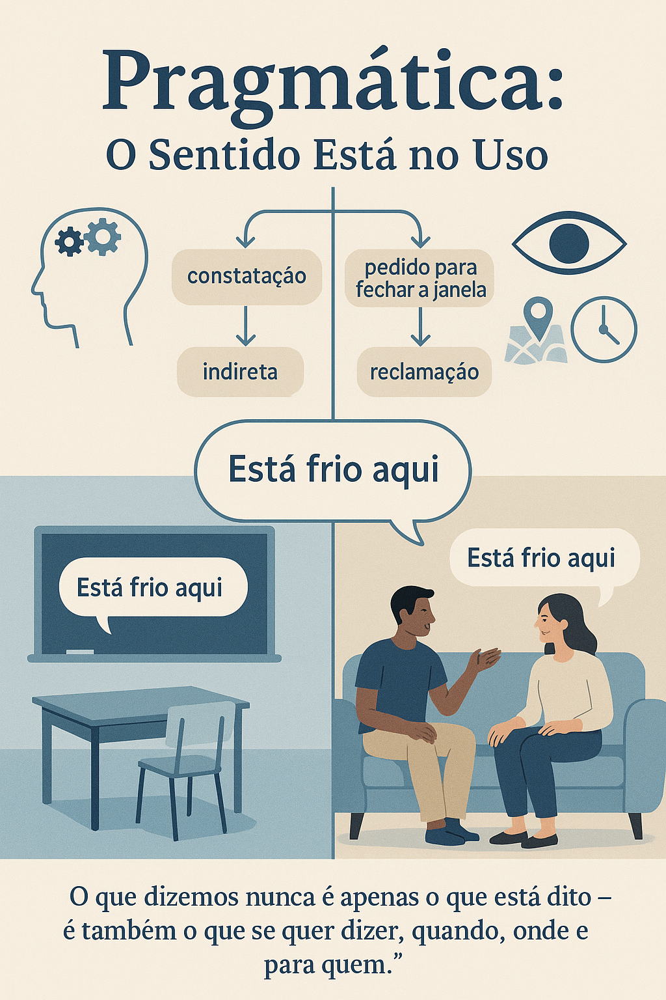

Introdução à Pragmática: O Estudo do Uso da Linguagem em Contexto
A faculdade da linguagem humana manifesta-se plenamente quando palavras, orações e discursos ganham vida nas interações sociais cotidianas. Longe de operar como um código mecânico e imutável de transmissão linear de informações, a comunicação verbal depende da contínua negociação de sentidos entre interlocutores concretos, historicamente situados e imersos em contextos culturais específicos. A disciplina linguística que se dedica a investigar a linguagem em ação — articulando a estrutura do enunciado às intenções do falante, ao ambiente da enunciação e às inferências do ouvinte — é a Pragmática.
Enquanto a Fonologia e a Morfossintaxe investigam a organização interna das unidades sonoras e gramaticais, e a Semântica Formal examina as condições lógicas de verdade e os significados literais e convencionais do léxico, a Pragmática direciona seu foco para a dimensão funcional e interacional da linguagem. Ela investiga o que os falantes fazem ao falar, como enunciados idênticos adquirem valores comunicativos radicalmente distintos dependendo da situação enunciativa e de que maneira os indivíduos compreendem muito mais do que aquilo que é estritamente verbalizado.
Historicamente tributária das reflexões semióticas de Charles Morris (1938) e da virada pragmática promovida pela filosofia da linguagem ordinária — capitaneada por pensadores como Ludwig Wittgenstein (1953), John L. Austin (1962) e Paul Grice (1975) —, a Pragmática rompeu com a ilusão positivista de que a linguagem serviria apenas para descrever estados de coisas no mundo. Como assinalam Levinson (2007) e Rajagopalan (2003), a língua é uma forma de ação social, um instrumento de cooperação, persuasão, polidez, poder e criação de realidades intersubjetivas.
Neste artigo acadêmico introdutório, você compreenderá as origens epistemológicas da Pragmática, as distinções estruturais entre Pragmática e Semântica, as quatro dimensões fundamentais do contexto comunicativo, os grandes eixos teóricos da disciplina (atos de fala, princípio de cooperação, implicaturas, dêixis e polidez), um roteiro metodológico de análise pragmática de enunciados, análises empíricas comentadas, questões resolvidas de concursos e vestibulares, FAQ estruturado e síntese conceitual.

O estatuto epistemológico da Pragmática na Linguística
A consagração da Pragmática como campo autônomo da Linguística moderna decorre da percepção de que a competência linguística dos sujeitos ultrapassa em muito o mero domínio gramatical. Ao enunciar, o falante mobiliza uma sofisticada competência comunicativa (HYMES, 1972), que dita não apenas como formular frases gramaticalmente corretas, mas quando falar, quando calar, de que modo adequar o tom ao ouvinte e como calcular os efeitos de sentido em dada situação institucional ou afetiva.
A célebre divisão triádica da Semiótica proposta por Charles Morris em 1938 delimitou as três dimensões basilares do estudo dos signos: a Sintaxe (que examina as relações formais entre os signos), a Semântica (que investiga a relação dos signos com os objetos aos quais se aplicam) e a Pragmática (que se ocupa da relação dos signos com seus intérpretes e usuários). A partir dos anos 1960 e 1970, o campo expandiu-se vertiginosamente, incorporando aportes da Sociolinguística, da Análise da Conversação e das Ciências Cognitivas.
A linguagem como práxis social e emergência de sentido
“A pragmática é o estudo das condições que regem o uso da linguagem na comunicação social e das regras pelas quais os interlocutores constroem e decodificam sentidos que transcendem a pura estrutura do código verbal. Ela nos ensina que o significado não é uma entidade estática encapsulada no dicionário, mas um evento dinâmico que emerge e se consolida na interação viva entre sujeitos em contexto” (MEY, 2001, p. 6; RAJAGOPALAN, 2003, p. 98).
O que é contexto e quais são suas dimensões constitutivas?
O conceito basilar e incontornável da Pragmática é o contexto. Longe de ser um mero cenário passivo ou "pano de fundo" decorativo, o contexto atua como elemento gerador e co-constituidor da própria mensagem verbal. Como ensina Kerbrat-Orecchioni (2006), os enunciados nunca existem no vácuo; eles são concebidos em resposta a enunciados prévios e orientados às expectativas dos coenunciadores.
Na perspectiva pragmática contemporânea, o contexto desdobra-se em quatro dimensões interconectadas:
As Quatro Dimensões do Contexto Pragmático
- Contexto Situacional (Físico e Imediato): refere-se às coordenadas espaço-temporais em que a enunciação ocorre (o aqui e o agora), bem como à presença física e às características imediatas dos participantes da cena comunicativa;
- Contexto Linguístico (Cotexto): engloba a cadeia discursiva que precede e sucede determinado enunciado no interior do próprio texto ou diálogo, fornecendo as âncoras anafóricas, catafóricas e temáticas indispensáveis à coesão e coerência;
- Contexto Sociocultural e Institucional: compreende as normas sociais, valores culturais compartilhados, hierarquias de poder, papéis discursivos institucionalizados (médico-paciente, juiz-réu, professor-aluno) e convenções de polidez vigentes na comunidade de fala;
- Contexto Cognitivo (Conhecimento Partilhado / Common Ground): abrange o conjunto de crenças mútuas, pressuposições, saberes enciclopédicos de mundo e memórias discursivas compartilhadas ativamente pelos interlocutores durante a troca verbal.
Pragmática vs. Semântica: fronteiras e distinções estruturais
Embora ambas as disciplinas tenham o significado como preocupação central, suas abordagens epistêmicas diferenciam-se pelo modo como encaram a relação entre a língua, o mundo e os falantes:
Semântica (O Significado da Língua)
Investiga o significado convencional, codificado, literal e abstrato das palavras, sintagmas e sentenças, avaliando suas relações intralinguísticas (sinonímia, hiponímia) e as condições de verdade formais independentemente da situação concreta de uso.
Foco: O que a sentença quer dizer literalmente de acordo com a gramática e o léxico?
Pragmática (O Sentido do Falante)
Examina o sentido contextualizado do enunciado, investigando o que o locutor pretende realizar ao proferir determinada sentença e de que maneira o interlocutor deduz as intenções comunicativas, implicaturas e atitudes do enunciador.
Foco: O que o falante quer dizer ao usar essa sentença nesta situação específica?
A tabela a seguir sistematiza as principais diferenças operacionais entre os dois domínios teóricos:
| Critério Teórico | Semântica | Pragmática |
|---|---|---|
| Unidade de Análise | A frase / sentença (unidade teórica, abstrata e descontextualizada). | O enunciado (realização concreta, histórica e contextualizada). |
| Natureza do Significado | Estável, convencional, composicional e dicionarizado. | Dinâmico, intencional, negociado e inferencial. |
| Critério Avaliativo | Condições lógicas de verdade ou falsidade. | Condições de felicidade, eficácia e adequação comunicativa. |
| Papel do Interlocutor | Receptor passivo do código decodificado. | Coautor ativo do sentido mediante cálculo inferencial. |
| Dependência Contextual | Mínima ou nula (isolamento formal em laboratório teórico). | Máxima e indispensável (o contexto molda o valor do ato). |
A fronteira fluida entre o dito e o comunicado
A separação entre Semântica e Pragmática não é um abismo intransponível, mas uma fronteira dinâmica intensamente debatida na Linguística contemporânea. Enquanto os modelos formalistas defendem o minimalismo semântico (a semântica fornece uma proposição literal completa e a pragmática entra apenas secundariamente), teóricos contextualistas e cognitivistas — como os propositores da Teoria da Relevância (SPERBER; WILSON, 1995) — demonstram que até mesmo a recuperação do "significado explícito" de uma sentença exige inferências pragmáticas profundas para desambiguar palavras, preencher elipses e identificar referentes.
Os grandes eixos teóricos da Pragmática
Para apreender a Pragmática em sua totalidade, é indispensável dominar seus principais pilares teóricos desenvolvidos a partir de meados do século XX:
1. Teoria dos Atos de Fala (Austin e Searle)
Proposta inicialmente por John L. Austin (1962) em suas conferências de Harvard publicadas sob o título How to Do Things with Words e posteriormente sistematizada por John Searle (1969), essa teoria postula que dizer algo é, fundamentalmente, fazer algo. Austin superou a dicotomia entre enunciados puramente constatativos (que apenas descrevem a realidade) e performativos (que realizam uma ação, como "Eu vos declaro marido e mulher"), demonstrando que todo ato linguístico completo subdivide-se em três dimensões simultâneas:
- Ato Locucionário: a produção física, fonética, sintática e semântica de uma sentença provida de sentido literal (o ato de dizer algo);
- Ato Ilocucionário: a força comunicativa convencional ou intencional investida no enunciado (o ato que se realiza ao dizer algo: prometer, ordenar, sugerir, advertir, batizar);
- Ato Perlocucionário: os efeitos concretos, psicológicos ou comportamentais que o enunciado provoca no ouvinte (o efeito obtido por dizer algo: convencer, assustar, confortar, irritar).
2. Princípio de Cooperação e Máximas Conversacionais (Paul Grice)
Em 1975, H. Paul Grice demonstrou que a conversação humana é regida por uma premissa implícita de colaboração recíproca entre os participantes: o Princípio de Cooperação (“Faça sua contribuição conversacional tal como é requerida, no momento em que ocorre, pelo objetivo compartilhado da conversa”). Grice desdobrou esse princípio em quatro máximas cardeais:
- Máxima de Quantidade: forneça a quantidade exata de informação necessária — nem mais, nem menos;
- Máxima de Qualidade: afirme apenas aquilo que você acredita ser verdadeiro e para o qual possui evidências suficientes;
- Máxima de Relação (Relevância): seja pertinente e direto ao ponto central da discussão;
- Máxima de Modo: seja claro, breve, ordenado e evite ambiguidades ou obscuridades desnecessárias.
Quando um falante viola ou quebra abertamente uma dessas máximas sem abandonar o diálogo, ele gera uma implicatura conversacional: um sentido implícito que o ouvinte é obrigado a calcular para manter a hipótese de que o falante continua cooperando. É desse mecanismo que nascem a ironia, a metáfora conversacional e os subentendidos.
3. Dêixis e Ancoragem Contextual
A dêixis (do grego deiktikós, "apontar") é o mecanismo linguístico pelo qual palavras e estruturas gramaticais ancoram-se diretamente na situação de enunciação. Elementos deíticos como pronomes pessoais (eu, você), demonstrativos (este, aquele), advérbios de tempo e espaço (aqui, agora, ontem) e morfemas de tempo verbal não possuem significado referencial fixo: seu referente desloca-se a cada nova tomada de turno no discurso.
4. Teoria da Polidez e Preservação da Face (Brown e Levinson)
Desenvolvida por Penelope Brown e Stephen Levinson (1987) com base na sociologia da interação de Erving Goffman, a Teoria da Polidez investiga as estratégias discursivas mobilizadas para mitigar ou evitar os chamados Atos que Ameaçam a Face (Face Threatening Acts — FTA). Os sujeitos negociam continuamente a preservação de sua "face positiva" (o desejo de ser aprovado, admirado e acolhido pelo grupo) e de sua "face negativa" (o desejo de manter sua liberdade de ação sem imposições ou intromissões alheias), recorrendo a pedidos indiretos, atenuadores e marcadores de cortesia.
Roteiro metodológico: como analisar um enunciado sob a ótica pragmática
Para estudantes de Letras, vestibulandos e pesquisadores que realizam análises discursivas e interpretativas de textos, a descrição pragmática de qualquer interação exige seguir uma ordem metodológica consistente:
Etapas do roteiro de análise pragmático-enunciativa
- Caracterização da cena enunciativa: identificar os interlocutores reais, seus papéis institucionais, o suporte textual e as coordenadas de tempo e espaço da enunciação;
- Mapeamento das âncoras deíticas: localizar pronomes, advérbios e tempos verbais que situam o locutor e o alocutário no discurso;
- Determinação da força ilocucionária: identificar se o ato de fala é direto (a forma sintática corresponde à intenção literal) ou indireto (uma pergunta atua como ordem ou pedido atenuado);
- Avaliação do cumprimento ou quebra das máximas de Grice: verificar se há transgressão voluntária das máximas de quantidade, qualidade, relação ou modo;
- Dedução das implicaturas e pressuposições: explicitar os sentidos implícitos recuperados pelo cálculo inferencial a partir do conhecimento de mundo compartilhado;
- Exame das estratégias de polidez e argumentação: avaliar como a escolha do léxico, o uso de atenuadores ou a assertividade visam preservar a face dos envolvidos ou direcionar o interlocutor a determinadas conclusões.
Exemplos práticos de análise pragmática aplicada
Análise minuciosa do enunciado cotidiano: “Você tem horas?”
1. Nível Semântico (Significado Literal): Pergunta polar fechada que indaga estritamente sobre a posse ou domínio de um instrumento medidor de tempo por parte do interlocutor (resposta literal: "Sim, tenho" ou "Não, não tenho").
2. Nível Pragmático (Ato Ilocucionário Indireto): O enunciado opera como um pedido atenuado de informação ("Diga-me que horas são, por gentileza"). O falante formula um ato indireto para não invadir de forma impositiva o espaço do ouvinte, preservando a face negativa de ambos.
3. Força Perlocucionária Pretendida: Fazer com que o ouvinte consulte seu relógio ou telefone e verbalize o horário exato.
4. Quebra de Cooperação Cômica: Se o interlocutor responder apenas "Sim" e continuar caminhando sem informar as horas, ele rebaixa propositalmente a interação ao nível estritamente semântico, quebrando a Máxima de Quantidade e violando o Princípio de Cooperação.
Análise minuciosa do diálogo: “O que você achou do meu novo corte de cabelo?”
Contexto: Interação informal entre dois colegas de trabalho após um deles aparecer com um penteado excêntrico.
Enunciado do Interlocutor B: “O tempo hoje está surpreendentemente agradável, não acha?”
Análise Griceana das Máximas: O falante B viola flagrantemente a Máxima de Relação (Relevância) ao mudar abruptamente de assunto, recusando-se a emitir um parecer direto sobre o cabelo do colega.
Cálculo da Implicatura Conversacional: Como o interlocutor A assume que B não enlouqueceu e continua cooperando com a interação humana, calcula: "Se B não respondeu que o corte ficou bom e evitou mentir (o que preserva a Máxima de Qualidade), mas não quis me ofender frontalmente (estratégia de polidez e preservação da minha face positiva), a conclusão implícita é de que ele achou o corte feio ou inadequado".
Conclusão da análise empírica
Os dois exemplos evidenciam que a comunicação humana bem-sucedida raramente se esgota no código literal. Comunicar-se com maestria significa gerenciar expectativas contextuais, calibrar forças ilocucionárias e guiar o outro com elegância por labirintos de inferências compartilhadas.
Questões para estudo e reflexão
Questão 1
(Concurso Público / Professor de Língua Portuguesa) Um cliente entra em uma livraria e diz ao atendente: “Você saberia me dizer onde fica a seção de linguística?”. Do ponto de vista da Teoria dos Atos de Fala de John Searle, esse enunciado configura-se como:
- A) Um ato de fala direto, pois o cliente apenas deseja saber se o funcionário possui conhecimento sobre o mapa da loja.
- B) Um ato de fala puramente constatativo, sem qualquer pretensão de ação prática.
- C) Um ato de fala indireto, no qual uma estrutura interrogativa sobre a capacidade do ouvinte desempenha a força ilocucionária de um pedido ou solicitação.
- D) Uma violação grave do princípio de cooperação que inviabiliza a compreensão mútua.
Ver resposta comentada
Gabarito: C.
Resposta comentada: Trata-se do clássico exemplo de ato de fala indireto teorizado por John Searle. No nível sintático-literal, formula-se uma pergunta sobre a capacidade epistêmica do interlocutor ("você saberia?"), mas a real força ilocucionária subjacente é diretiva: uma solicitação polida para que o funcionário aponte ou conduza o cliente até a estante desejada.
Questão 2
(ENEM / Linguagens e Códigos) Em uma conversa de aplicativo de mensagens, a mãe envia a seguinte mensagem ao filho adolescente durante o horário de almoço: “A comida está na mesa”. O filho prontamente responde: “Já estou descendo, mãe”. Sob o prisma da Pragmática e da Teoria das Implicaturas, como se explica a perfeita sintonia da resposta do jovem?
Ver resposta comentada
Resposta comentada: A frase da mãe (“A comida está na mesa”) é formalmente uma mera asserção declarativa que descreve a localização espacial de um alimento. Contudo, ancorada no contexto cognitivo compartilhado de rotina familiar, ela carrega a força ilocucionária indireta de uma convocação urgente (“Venha almoçar agora”). O filho, compartilhando desse contexto, não interpreta o enunciado como simples descrição física, mas calcula imediatamente a implicatura e responde ao ato implícito de convocação com sua ação futura (“Já estou descendo”).
Questão 3
(PAES UEMA / Letras) Considere o diálogo a seguir entre dois estudantes universitários:
Mariana: “Você vai à festa de comemoração dos formandos hoje à noite?”
Carlos: “Tenho uma prova decisiva de Linguística Histórica amanhã às 7 horas da manhã.”
De acordo com a teoria conversacional de H. P. Grice, analise como o sentido da resposta de Carlos é construído.
Ver resposta comentada
Resposta comentada: Carlos não responde explicitamente "sim" ou "não" à indagação polar de Mariana. Aparentemente, há uma quebra superficial da Máxima de Relação (Pertinência), já que ele fala sobre uma avaliação acadêmica matinal em resposta a uma pergunta sobre uma festa noturna. No entanto, confiando no Princípio de Cooperação, Mariana aciona seu conhecimento de mundo enciclopédico (provas difíceis exigem descanso e estudo noturno, o que é incompatível com festas na véspera) e infere a implicatura conversacional particularizada: Carlos não comparecerá ao evento.
Questão 4
(Exame Acadêmico / Pós-Graduação em Linguística) Explique a diferença teórica fundamental entre uma implicatura conversacional (Grice) e uma pressuposição semântico-pragmática, exemplificando a partir da frase: “João parou de fumar”.
Ver resposta comentada
Resposta comentada: A pressuposição é uma informação subjacente intrinsecamente ancorada em um gatilho linguístico presente na própria estrutura léxica da sentença (o verbo aspectual de mudança de estado parar). A verdade de que "João fumava anteriormente" é condição prévia indispensável para que o enunciado faça sentido, resistindo até mesmo ao teste da negação (“João não parou de fumar” continua pressupondo que ele fumava). Já a implicatura conversacional é de natureza estritamente contextual, pragmática e cancelável: se alguém diz "João parou de fumar" em resposta a "Por que ele anda tão ansioso e comendo doces?", a ideia de que "sua ansiedade decorre da abstinência de nicotina" é uma implicatura pragmática deduzida da situação, que pode ser revogada sem contradição semântica (“...mas não é por isso que ele está ansioso, ele apenas perdeu as chaves de casa”).
Questão 5
(Vestibular Tradicional / Filosofia e Linguagem) Por que a publicação da obra How to Do Things with Words (1962), de John L. Austin, é considerada um divisor de águas contra o chamado "positivismo lógico" que dominava os estudos filosóficos da linguagem no início do século XX?
Ver resposta comentada
Resposta comentada: O positivismo lógico e o logicismo semântico (como o do Círculo de Viena) sustentavam a tese de que a única função legítima da linguagem seria descrever a realidade empírica objetiva, reduzindo todo enunciado a critérios binários de verdade ou falsidade (verdadeiro vs. falso). Austin desferiu um golpe mortal nessa concepção (a que chamou ironicamente de "falácia descritiva"), demonstrando empiricamente que a grande maioria dos usos da linguagem cotidiana destina-se a realizar atos sociais e institucionais (prometer, batizar, jurar, desculpar-se, legislar) que não são verdadeiros nem falsos, mas felizes ou infelizes (adequados ou inadequados às convenções sociais). Com isso, Austin abriu as portas para o florescimento da Pragmática moderna.
Resumo da Introdução à Pragmática
- A Pragmática estuda a linguagem em uso e a construção dinâmica de sentidos em situações reais de comunicação humana;
- O sentido pragmático depende intimamente do contexto em suas quatro dimensões: situacional, linguística (cotexto), sociocultural e cognitiva (conhecimento mútuo);
- Enquanto a Semântica analisa frases descontextualizadas sob critérios de verdade lógica, a Pragmática analisa enunciados reais sob critérios de adequação, eficácia e condições de felicidade;
- A Teoria dos Atos de Fala (Austin e Searle) postula que enunciar é agir socialmente, dividindo-se em atos locucionários, ilocucionários e perlocucionários;
- O Princípio de Cooperação de Grice articula-se em quatro máximas conversacionais (Quantidade, Qualidade, Relação e Modo), cuja transgressão deliberada produz implicaturas conversacionais;
- A dêixis é o mecanismo de ancoragem que liga termos variáveis (como eu, aqui, agora) às coordenadas espaço-temporais e subjetivas da enunciação;
- A Teoria da Polidez (Brown e Levinson) elucida como falantes empregam atos indiretos e atenuadores para gerenciar e preservar as faces positiva e negativa nas interações;
- O domínio da Pragmática é ferramenta indispensável para a análise crítica do discurso, a interpretação textual avançada, a docência e o aprimoramento de sistemas de processamento de linguagem natural (PLN).
Perguntas frequentes sobre Pragmática
O que estuda a Pragmática na Linguística?
A Pragmática é o ramo dos estudos da linguagem que investiga o uso concreto da língua em contextos interacionais específicos. Ela examina como os falantes atribuem e interpretam sentidos que extrapolam as definições estritamente literais e dicionarizadas, analisando a influência do contexto compartilhado, das normas sociais, das intenções dos sujeitos e dos atos que se realizam por meio da fala e da escrita.
Qual é a diferença entre frase e enunciado para a Pragmática?
Para a Pragmática, frase é uma unidade formal, teórica e abstrata da gramática da língua, dotada de estrutura interna, mas isolada de qualquer situação real de uso. Já o enunciado é a realização histórica, empírica e irrepetível de uma frase em uma cena comunicativa concreta, proferida por um locutor particular, destinada a um interlocutor específico, sob certas coordenadas de tempo e espaço.
Como a Pragmática se diferencia da Semântica?
A Semântica concentra-se no significado intrínseco, literal, codificado e convencional das palavras e orações, aferindo condições formais de verdade e relações lexicais abstratas. A Pragmática, por sua vez, debruça-se sobre o sentido negociado em uso (o "sentido do falante"), estudando o que o locutor quer comunicar além do que foi dito literalmente e como o ouvinte calcula essas intenções no contexto comunicativo.
O que são atos de fala e quem formulou essa teoria?
A Teoria dos Atos de Fala foi inaugurada pelo filósofo britânico John L. Austin e aprofundada pelo filósofo norte-americano John Searle. A premissa central é que falar não é apenas descrever o mundo, mas intervir nele e transformá-lo. Ao proferirmos enunciados, executamos atos como prometer, batizar, ordenar, desculpar-se ou alertar, mobilizando simultaneamente dimensões locucionárias (dizer algo), ilocucionárias (fazer algo ao dizer) e perlocucionárias (produzir efeitos no receptor).
O que é o Princípio de Cooperação de Paul Grice?
É a premissa formulada por H. P. Grice segundo a qual os interlocutores em uma conversação operam sob um acordo tácito de colaboração mútua para que a comunicação seja bem-sucedida. Desdobra-se em quatro máximas conversacionais: Quantidade (seja informativo na medida certa), Qualidade (seja verídico), Relação (seja relevante) e Modo (seja claro e ordenado).
O que é uma implicatura conversacional?
Implicatura conversacional é uma proposição ou sentido implícito inferido pelo interlocutor a partir da quebra consciente de uma máxima conversacional por parte do falante. Quando alguém quebra uma máxima sem abandonar a intenção de comunicar-se cooperativamente, força o ouvinte a buscar uma interpretação subjacente que preserve o sentido da interação, como ocorre na ironia, nas indiretas polidas e nas metáforas do dia a dia.
O que é dêixis e qual a sua função comunicativa?
Dêixis é o fenômeno gramatical e pragmático pelo qual determinados elementos da língua — como pronomes pessoais (eu, tu), advérbios de lugar (aqui, lá), de tempo (agora, ontem) e tempos verbais — dependem diretamente das circunstâncias físicas e subjetivas da enunciação para que seus referentes sejam identificados. Sem o contexto da fala, expressões deíticas tornam-se semanticamente incompletas ou ambíguas.
Por que o estudo da Pragmática é decisivo para a interpretação textual em vestibulares e concursos?
Porque provas contemporâneas de alto nível (como o ENEM, PAES UEMA e vestibulares das principais universidades públicas) não avaliam mais a simples decodificação mecânica da gramática normativa. As questões exigem a habilidade de ler as entrelinhas: identificar a intencionalidade discursiva, detectar ironias e subentendidos, reconhecer argumentos implícitos e compreender como o contexto sociopolítico molda os sentidos dos textos jornalísticos, publicitários e literários.
Considerações finais
A Pragmática resgata a dimensão mais vibrante e humana da linguagem: sua condição de evento social, dialógico e intersubjetivo. Longe de reduzir o idioma a um conjunto estéril de fórmulas sintáticas ou definições de dicionário, ela demonstra que a verdadeira maestria comunicativa reside na capacidade de transitar com sensibilidade pelo contexto, calibrar a força dos atos de fala e interpretar as sutilezas silenciadas nas entrelinhas do discurso cotidiano.
Para estudantes de Letras, educadores, jornalistas, comunicadores e profissionais dedicados à Inteligência Artificial e ao Processamento de Linguagem Natural (PLN), os conceitos pragmáticos oferecem o instrumental analítico indispensável para desconstruir ambiguidades, mediar conflitos interculturais, desarmar manipulações ideológicas e compreender a fundo como seres humanos constroem cooperação e significado por meio das palavras.
Conteúdos relacionados
- Deixis: a linguagem que aponta para o contexto
- Teoria dos Atos de Fala na Pragmática: Austin, Searle e a Ação pela Linguagem
- Princípios da Comunicação: Cooperação, Máximas de Grice e Cortesia
- Inferência e Implicatura: o Sentido Além do Literal
- Pragmática e Ironia: O Sentido nas Entrelinhas
- Pragmática e Gêneros Textuais: a Linguagem em Ação
- Pragmática na Linguística: Contexto, Interação e Construção de Sentidos
- Pragmática | Linguagem, Contexto e Construção de Sentidos — Índice Geral
Referências
- AUSTIN, John Langshaw. How to Do Things with Words. Oxford: Oxford University Press, 1962.
- BROWN, Penelope; LEVINSON, Stephen C. Politeness: Some Universals in Language Usage. Cambridge: Cambridge University Press, 1987.
- FIORIN, José Luiz. Introdução à Linguística: I. Objetos Teóricos. 6. ed. São Paulo: Contexto, 2013.
- GRICE, Herbert Paul. Logic and Conversation. In: COLE, Peter; MORGAN, Jerry (ed.). Syntax and Semantics: Speech Acts. New York: Academic Press, 1975. v. 3, p. 41-58.
- HYMES, Dell. On Communicative Competence. In: PRIDE, J. B.; HOLMES, J. (ed.). Sociolinguistics. Baltimore: Penguin Books, 1972. p. 269-293.
- KERBRAT-ORECCHIONI, Catherine. A enunciação: do sujeito ao discurso. Tradução de Pedro de Souza e Fátima Murad. Campinas: Pontes, 2006.
- LEECH, Geoffrey. Principles of Pragmatics. London: Longman, 1983.
- LEVINSON, Stephen C. Pragmática. Tradução de Alceu Dias Pinto e Aníbal Mari. São Paulo: Martins Fontes, 2007.
- MEY, Jacob L. Pragmatics: An Introduction. 2. ed. Oxford: Blackwell Publishing, 2001.
- MORRIS, Charles W. Foundations of the Theory of Signs. In: NEURATH, Otto; CARNAP, Rudolf; MORRIS, Charles (ed.). International Encyclopedia of Unified Science. Chicago: University of Chicago Press, 1938. v. 1, n. 2, p. 1-59.
- RAJAGOPALAN, Kanavillil. Por uma linguística crítica: linguagem, identidade e a questão ética. São Paulo: Parábola Editorial, 2003.
- SEARLE, John R. Speech Acts: An Essay in the Philosophy of Language. Cambridge: Cambridge University Press, 1969.
- SPERBER, Dan; WILSON, Deirdre. Relevance: Communication and Cognition. 2. ed. Oxford: Blackwell, 1995.
- WITTGENSTEIN, Ludwig. Investigações Filosóficas. Tradução de Marcos G. Montagnoli. Petrópolis: Vozes, 1953/2014.
Explore Outros Conteúdos
Continue seus estudos acessando outras seções do site Mestre Kira: